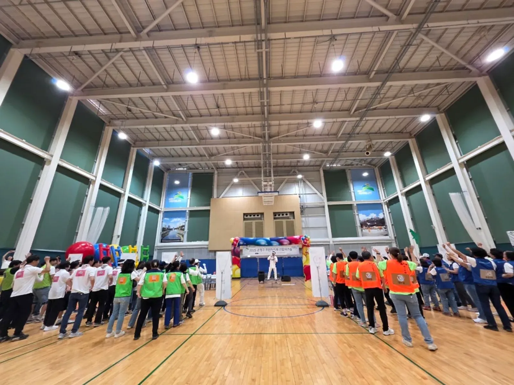
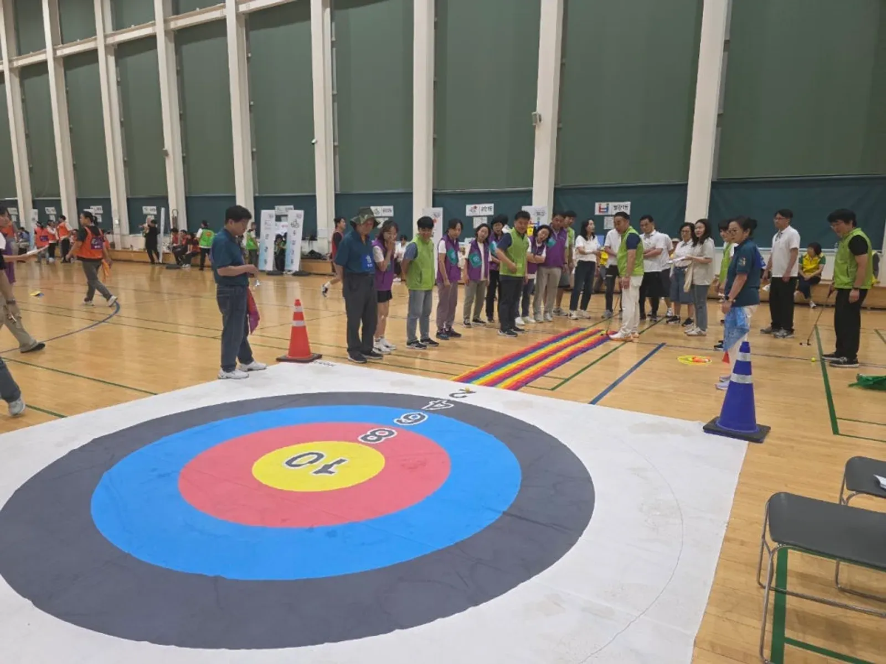
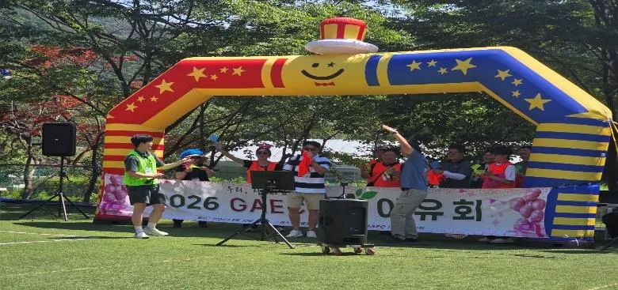

도봉 행사 준비 · 2026년 10월 28일
도봉 기업 체육대회 대행 — 종목 구성 · 팀 나누기 · 게임도구
도봉 기업 체육대회 대행을 알아보는 담당자라면 먼저 정할 것은 이 체육대회로 무엇을 얻고 싶은가입니다. 부서 간 벽을 낮추고 싶은지, 한 해를 마무리하며 다 함께 웃고 싶은지에 따라 팀 나누는 법과 종목이 달라집니다. 체력이 좋은 사람만 즐기는 대회가 되지 않도록 준비하는 방법을 정리했습니다.

- 기업 체육대회는 부서별 대항보다 부서를 섞은 팀이 교류에 도움이 됩니다.
- 종목은 달리기 · 힘겨루기만으로 채우지 말고, 운과 협동이 섞인 게임을 절반 이상 둡니다.
- 참가자 연령과 체력 차이가 크면 모두가 같은 몫을 하는 협동 종목이 잘 맞습니다.
- 억지 웃음이나 참가자 비하 없이 진행하는 MC가 있으면 처음 만난 동료끼리도 어색함이 빨리 풀립니다.
1. 도봉 기업 체육대회, 대행을 맡기기 전에 정할 것
힐링엔터테인먼트는 노원 본사에서 도봉구청까지 차로 약 5분 · 4.1km(막히지 않을 때) 거리라 도봉 안의 운동장 · 체육관(창동 · 방학동 · 쌍문동 · 도봉동 등)은 사전 답사를 잡기가 수월합니다. 다만 이동 시간은 막히지 않을 때 기준이라 출퇴근 시간에는 더 걸릴 수 있습니다. 상담 전에 아래를 정리해 두시면 좋습니다.
| 정할 것 | 선택지 | 영향 |
|---|---|---|
| 목적 | 부서 교류 · 화합 · 한 해 마무리 | 팀 구성 · 종목 |
| 장소 | 운동장 · 실내 체육관 | 종목 · 음향 · 우천 대안 |
| 인원 · 연령대 | 신입부터 임원까지 | 종목 난이도 |
| 시간 | 반나절 · 하루 | 종목 수 · 점심 위치 |
| 시상 | 팀 시상 · 개인 시상 · 경품 | 경품 진행 순서 |
회사 행사는 보통 평일에 열리기 때문에 출발 시각과 집합 장소도 일찍 정해야 합니다. 직원들이 각자 오는지, 회사에서 함께 이동하는지에 따라 첫 순서의 시작 시각이 달라집니다. 집합이 늦어질 때를 대비해 첫 30분은 늦게 온 사람도 바로 끼어들 수 있는 몸풀기 · 팀 구호 정하기로 채우는 편이 안전합니다.
2. 팀 나누기 — 부서를 섞을까, 부서끼리 겨룰까
부서별 대항은 응원이 쉽고 준비가 간단합니다. 대신 평소 함께 일하는 사람끼리만 어울리게 됩니다. 부서를 섞은 팀은 처음엔 어색하지만, 종목을 몇 개 지나면 다른 부서 사람과 이름을 부르며 응원하게 됩니다. 행사의 목적이 교류라면 섞는 쪽을 권합니다.
- 팀 색깔 조끼나 머리띠로 팀을 한눈에 구분합니다.
- 팀마다 이름과 구호를 정하는 시간을 시작 순서에 넣습니다.
- 임원 · 관리자는 여러 팀에 고르게 나눕니다.
- 팀장 역할은 직급과 상관없이 정하면 분위기가 가벼워집니다.

3. 기업 체육대회 종목 구성 — 체력보다 협동
회사 체육대회에서 가장 흔한 실수는 달리기와 힘겨루기만으로 하루를 채우는 것입니다. 운동을 잘하는 몇 사람만 바쁘고 나머지는 구경꾼이 됩니다. 운이 섞인 게임과 모두가 같은 몫을 하는 협동 게임을 절반 이상 두면, 나이와 체력에 상관없이 함께 뛰게 됩니다.
| 종류 | 예 | 좋은 점 |
|---|---|---|
| 협동 게임 | 큰 공 머리 위로 넘기기 · 대형 천 게임 | 모두가 같은 몫을 한다 |
| 운이 섞인 게임 | 대형 주사위 옮기기 · 색지 뒤집기 | 체력 차이가 덜 드러난다 |
| 릴레이 | 에어사다리 릴레이 · 고리 던지기 | 팀 응원이 커진다 |
| 힘겨루기 | 단체 줄다리기 | 마지막 순서로 분위기를 올린다 |
| 마무리 | 대동놀이 · 시상 · 경품 | 승패와 상관없이 함께 끝낸다 |

4. 진행과 음향 — MC 한 사람이 흐름을 잡습니다
체육대회는 종목 설명, 점수 발표, 다음 순서 안내가 쉬지 않고 이어집니다. 대표 MC 이현호가 직접 진행하고, 진행 보조 요원이 다음 종목의 게임도구를 미리 깔아 두면 빈 시간이 줄어듭니다. 억지 웃음이나 참가자를 깎아내리는 농담 없이 자연스럽게 참여를 끌어내는 것이 진행 원칙입니다.
- 운동장: 소리가 흩어지므로 스피커를 양쪽에 나눠 둡니다.
- 실내 체육관: 소리가 울리므로 음량보다 스피커 방향을 맞춥니다.
- 음악: 종목마다 신나는 음악을 바꿔 틀면 응원이 커집니다. DJ 를 따로 둘 수도 있습니다.

5. 견적 문의할 때 고르는 항목
비용은 날짜 · 장소 · 인원 · 진행 시간 · 프로그램 · 필요한 장비에 따라 달라집니다. 자동 견적서에서 항목을 골라 보내 주시면 확인 후 견적을 안내드립니다.
| 항목 | 내용 |
|---|---|
| 기업 체육대회 · 워크숍 | 기획 · 프로그램 구성 · 진행 |
| 대표 MC 이현호 진행 | 행사 전체 진행 |
| 체육대회 게임도구 | 대형 공 · 대형 주사위 · 에어사다리 등 |
| 진행 보조 · 운영 스탭 | 경기 진행 · 이동 안내 · 용품 준비 |
| 음향 (중형) | 체육관 · 강당 |
| DJ | 응원 음악 |
| 경품 · 시상 진행 | 추첨 · 시상식 운영 |
도봉 지역 안내는 도봉 행사 안내에 있습니다.
자주 묻는 질문
장소도 같이 찾아 주나요?
장소 섭외 · 대관은 자동 견적서 항목에 있습니다. 인원과 원하는 날짜를 알려 주시면 상담할 때 함께 이야기합니다.
비가 오면 체육대회는 어떻게 하나요?
실내 체육관을 쓸 수 있으면 종목을 실내용으로 바꿉니다. 날짜를 미룰지, 실내로 옮길지는 행사 전에 기준을 정해 두시는 편이 좋습니다.
점심 · 간식도 준비해 주나요?
식사와 간식은 회사에서 준비하실 일입니다. 점심 시간과 장소를 알려 주시면 그에 맞춰 오전 · 오후 순서를 짭니다.
행사 날짜가 정해지셨나요?
날짜 · 지역 · 인원 · 행사 종류만 알려 주시면 행사에 맞춰 상담 · 견적을 안내드립니다. 행사 중엔 통화가 어려우니 문자 · 카톡을 남겨 주세요.